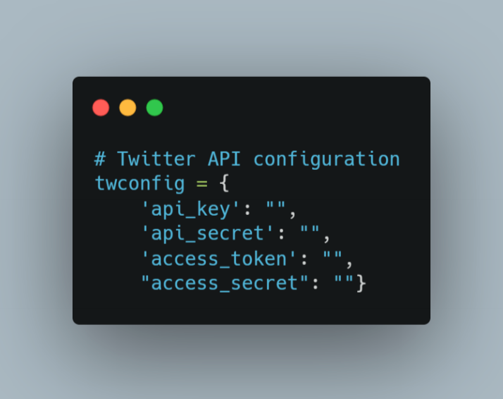
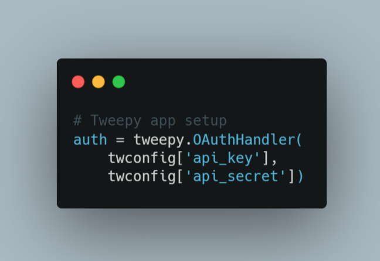
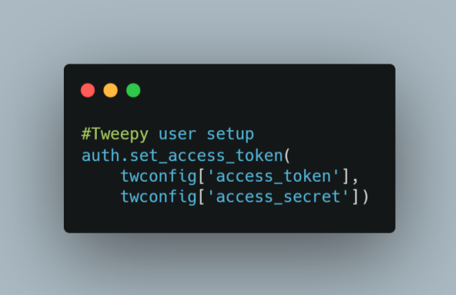
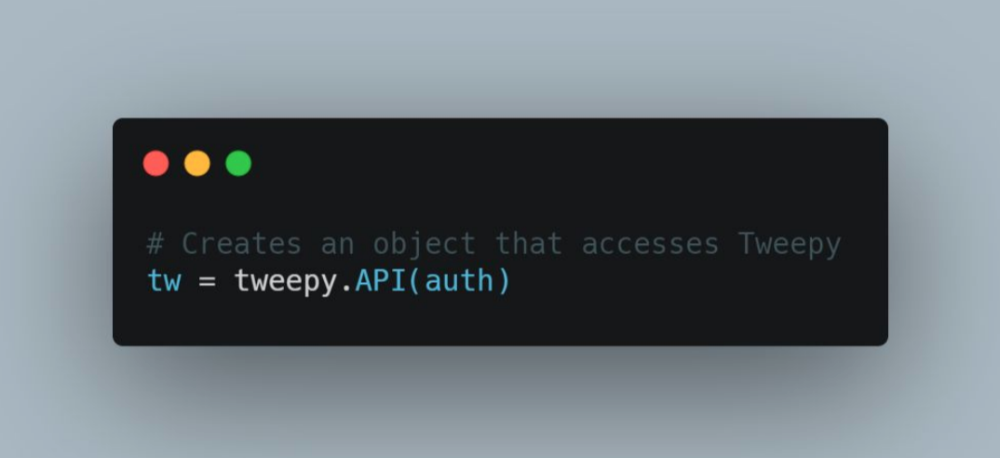
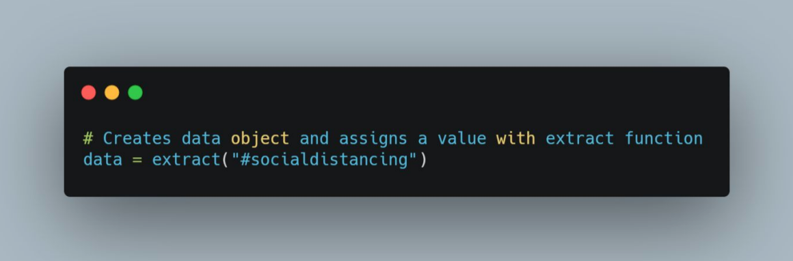
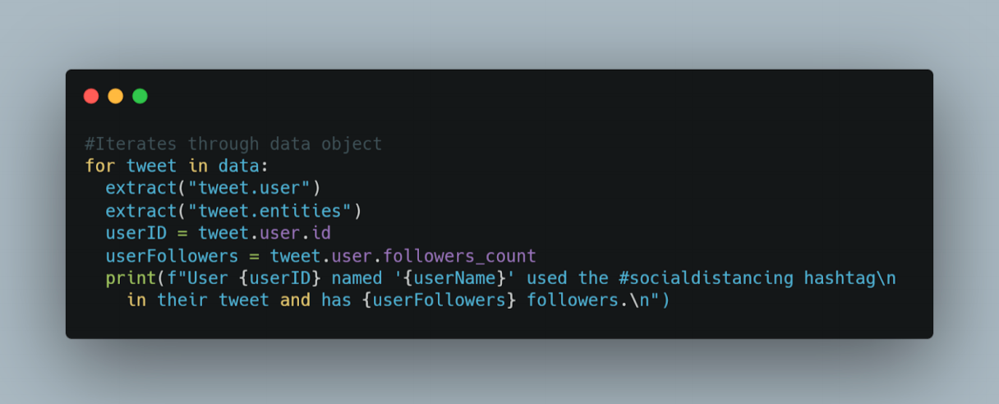
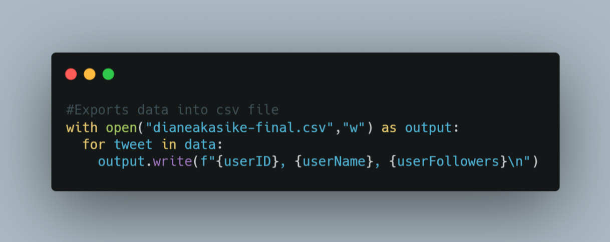
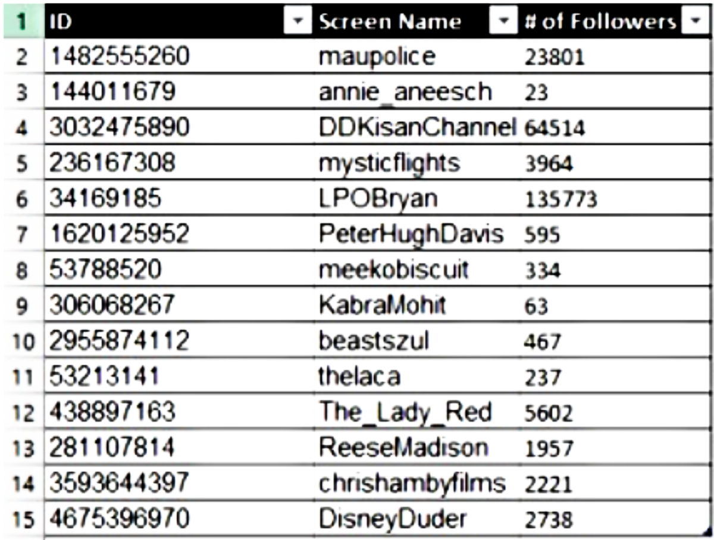

Object-Oriented Programming

I extracted data from the Twitter API. I wanted my code to show me tweets that include the hashtag #socialdistancing and help me determine which of the accounts that tweeted with this hashtag have the highest following. Based on the Tweet object in the API, I used root-level attributes to extract relevant information. More specifically, I pinpointed the ‘user’ (also an object) and ‘entities’ attributes to extract data from the tweets that include this hashtag.
Code Walkthrough
I first imported Tweepy, which is the Python library that allowed me to access the Twitter API, using an 'import tweepy' statement. I then imported CSV, which is a comma-separated values file that allowed me to export data into Excel, by using an 'import csv' statement.
This block of code creates an extract function that accepts one query argument as a string object. The function is meant to search Twitter and return the query results.
This block of code requires application credentials from a Twitter developer account in order to allow the code to access the Twitter API.
This block configures the Tweepy app setup.
This block configures the Tweepy user setup.
This block creates an object called ‘tw’ that accesses Tweepy.
This block creates an object called ‘data’ that uses the extract function to search Twitter for the query: “#socialdistancing”.
This block iterates through the data object and performs various tasks, including extracting data related to attributes from Tweepy, assigning variables that target specific data, and printing the results in a full sentence. I extracted the ‘user’ and ‘entities’ attributes related to the query because the ‘user’ attribute includes the user id and followers count and the ‘entities’ attribute includes the hashtags.
This block loads the data into a csv file.
Full Python Script
import tweepy
import csv
#Returns results from Twitter search
def extract(query):
"""Accepts one query argument as a string object that will search Twitter"""
if not isinstance(query, str):
return None
else:
try:
results = tw.search(query, tweet_mode="extended")
return results
except:
return None
# Twitter API configuration
twconfig = {
'api_key': "",
'api_secret': "",
'access_token': "",
"access_secret": ""}
# Tweepy app setup
auth = tweepy.OAuthHandler(
twconfig['api_key'],
twconfig['api_secret'])
#Tweepy user setup
auth.set_access_token(
twconfig['access_token'],
twconfig['access_secret'])
# Creates an object that accesses Tweepy
tw = tweepy.API(auth)
#Creates data object and assigns a value with extract function
data = extract("#socialdistancing")
#Iterates through data object
for tweet in data:
extract("tweet.user")
extract("tweet.entities")
userID = tweet.user.id
userFollowers = tweet.user.followers_count
print(f"User {userID} named '{userName}' used the #socialdistancing hashtag\n in their tweet and has {userFollowers} followers.\n")
#Exports data into csv file
with open("dianeakasike-final.csv","w") as output:
for tweet in data:
output.write(f"{userID}, {userName}, {userFollowers}\n")
Summary of Results
The tool I used after my loading process was Microsoft Excel. My goal was to create a table with user ID, user screen name, and number of followers of each account that used the hashtag #socialdistancing. My code only produced 15 search results at a time so the table has 15 rows.
What I Would Do Next
An idea for a potential real-world project that could use this code is as follows:
A clothing company has created a new clothing line that was designed around the concept of social distancing. They want to use Twitter as their main platform of promotion and want to reach out to popular users who would be willing to partner with their company and promote the new line. This code can be a starting point to help the company be able to see which users have recently made tweets using the hashtag #socialdistancing and how popular those users are based on their number of followers.
If this project were real, the company could use the user’s id to look up their twitter profile and determine if they want to partner with them. They could also continue to add on to the table (exported data) in Excel. To improve this code, I would change it to be able to constantly update the number of followers real time and access to more of the API.